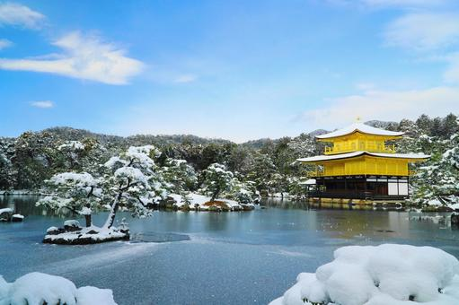
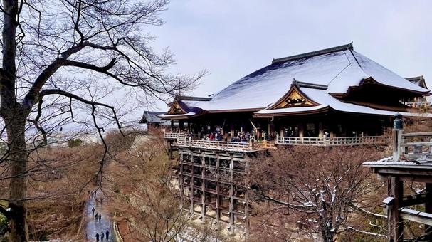

冬の魅力
冬の京都は、四季の中で最も静かな季節です。 観光客も比較的少なく、 落ち着いた雰囲気の中で寺院や神社を巡ることができます。
雪が降った日には、 金閣寺や清水寺が白く染まり、 まるで絵画のような美しい景色が広がります。
おすすめスポット3選

金閣寺
雪化粧した金閣寺は京都屈指の絶景。 冬だけの特別な景色です。

清水寺
澄んだ冬空と京都市街の眺めが魅力。 静かな参拝を楽しめます。

嵐山
冬の渡月橋周辺は落ち着いた雰囲気。 ゆっくり散策するのに最適です。
おすすめ写真スポット
雪が積もった金閣寺は全国的にも有名な撮影スポットです。 また、朝の嵐山や竹林の小径では、 冬ならではの静かな風景を撮影できます。
冬の京都グルメ
湯豆腐
南禅寺周辺の名物。 寒い季節にぴったりの京都グルメです。
にしんそば
京都の定番料理。 温かい出汁が身体を温めてくれます。
ぜんざい
観光の合間に味わいたい冬の甘味。
冬の京都モデルコース
9:00 金閣寺
11:00 龍安寺
12:30 湯豆腐ランチ
14:00 清水寺
16:00 八坂神社
18:00 冬の京都散策
雪が降ると、
京都はさらに静かになる。
その静けさの中で出会う景色は、 きっと忘れられない思い出になる。
← トップページへ戻る
その静けさの中で出会う景色は、 きっと忘れられない思い出になる。